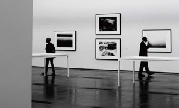
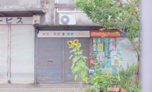

News
-
삼화페인트, 경기도미술관과 경기도 문화예술 발전 협약
삼화페인트공업은 지난 5일 경기도미술관과 경기도 문화예술 발전을 위한 업무협약(MOU)을 체결했다고 6일 밝혔다. 경기도미술관이 있는 안산에는 삼화페인트 안산공장이 있다.
2024-09-06 -
[씨줄날줄] 뭉크전 & 프리즈 서울
프리즈는 아트바젤, 피악(FIAC)과 함께 세계 3대 아트페어로 꼽힌다. 2003년 영국 런던에서 처음 시작해 유럽, 미국 등으로 영역을 확장한 뒤 아시아 진출을 선언하고 2022년 첫 무대를 대한민국 서울로 삼았다. 올해 세 번째를 맞은 ‘프리즈 서울’이 그제 막을 올렸다. 처음부터 함께했던 국내 최대 규모 아트페어인 키아프와 이번에도 공동으로 행사를 열어 국내외 미술 애호가들의 심장을 뛰게 하고 있다.
2024-09-06 -
경북의 혼(魂)이 담긴 무형유산 전승자 공예품 한 자리…22일까지 청도박물관서 개최
경상북도의 우수한 무형유산 전승 공예품을 한자리에서 감상할 수 있는 전시회가 개최된다. 5일 경북도는 오는 22일까지 청도박물관 기획전시실에서 '경상북도 무형유산 전승공예전' 전시회를 개최한다고 밝혔다.
2024-09-06
Column
-

(184)빼앗긴 들에도 봄은 오는가
봄이다. 입춘이 지났으니 절기상으로는 봄이다. 기온이 영하권을 살짝 맴돌고 있지만, 지역에 따라 꽃 몽우리가 올라오고 철모르는 꽃나무는 꽃을 활짝 피웠다.
-

(183)서울과 지방의 차이, 그 사이의 매개자
필자는 예술이 가장 재미있다고 생각했다. 이미지 하나가 그동안 살아왔던 나의 상식을 완벽히 깨트려 버리는 순간이 있다. 전쟁터의 탱크가 꽃마차가 되는 이용백 작가의 작품, 거짓말이 유구한 신화가 되어버리는 데미안 허스트의 작품처럼 말이다.
-
(182)동시대 한국미술 현장에서의 전통 읽기
사회적 거리두기가 완화되며 해외여행에 대한 욕구가 늘어나고 있다. 뮤지엄 큐레이터 17년차인 필자는 여행을 떠나면 늘 ‘한국관’ 혹은 ‘한국실’이 있는 해외박물관을 중심으로 꾸리게 된다.
-
(181)프랑스 사례로 살펴본 미술사교육의 전문화와 보편화
필자는 프랑스에서 미술사학을 전공했다. 학부 1,2학년 동안 고고학과 미술사학 과목들을 모두 이수해야 3학년 때 두 분야 중 하나를 선택하여 심화된 전문 지식을 터득할 기회를 가질 수 있었다.